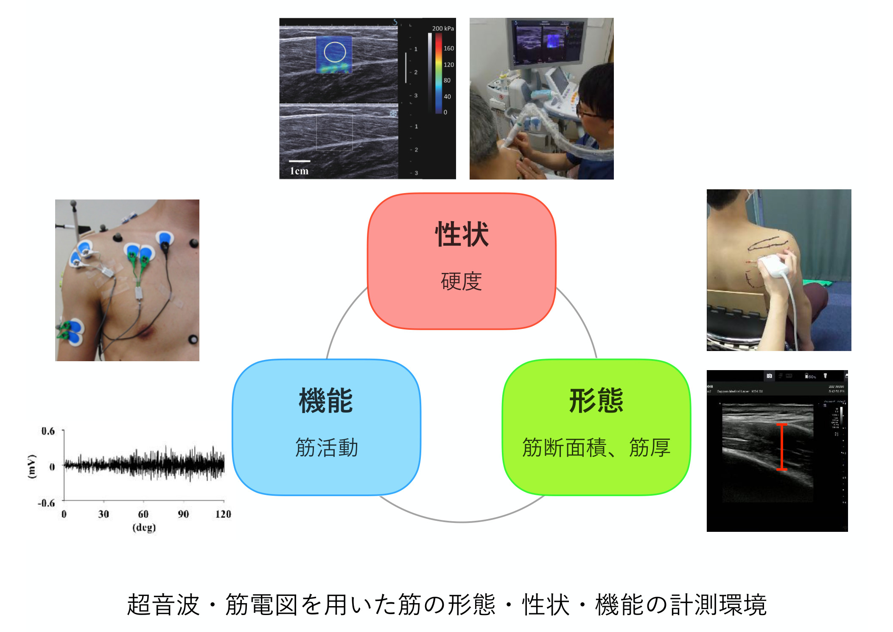

スポーツや日常生活を安全に続けるには、各筋の働きや形態・性状を客観的に捉え、測定結果を傷害予防や運動指導へ結び付けることが重要です。
理学療法士の臨床経験とスポーツ・運動器の専門性を基盤に、超音波剪断波エラストグラフィ（身体を傷つけず筋の硬さを画像・数値で捉える技術）、筋電図（筋活動の電気信号を記録する方法）、筋力・関節可動域評価を組み合わせ、運動器機能を定量化します。
これらの技術を用いて、子どもやアスリートの体力・姿勢・生活習慣・傷害状況の調査と組み合わせ、個人・集団の特徴を可視化することに取り組んでいます。さらに、測定機器・運動サービスの実証、体力測定、傷害予防プログラムの設計・評価、指導者研修に活用することを目指しています。対象と目的に応じ、現場で実行可能な評価項目とフィードバック方法を共同設計します。

学校・スポーツ団体と体力・運動器機能測定、傷害実態調査、フィードバックを実施し、傷害予防プログラムの設計・評価に活用
自治体・教育委員会と子どもの体力・姿勢・生活習慣・運動器症状を調査し、健康教育やスポーツ施策の基礎資料を作成
医療・健康関連機関と運動器機能やリハビリテーション前後の経時測定、データ解析、評価方法の検証、専門職研修を共同実施
医療機器・ヘルスケア企業と超音波・筋電図・筋力測定を用いた機器や運動・健康サービスの実証試験を共同設計し、機能評価指標と改善点を提示
理学療法士の臨床視点を生かし、身体機能を超音波・筋電図・筋力評価などで可視化します。測定機器や運動・健康サービスの実証、フィールド調査、プログラム評価などに取り組めます。評価計画からデータ解析・現場還元まで支援します。

芸術・スポーツ文化学科
スポーツ文化専攻 スポーツ・コーチング科学コース
理学療法士／専門理学療法士（運動器・スポーツ）
この研究について相談する
超音波・筋電図を用いた運動器機能評価・傷害予防プログラム設計に関するご相談を承っています。